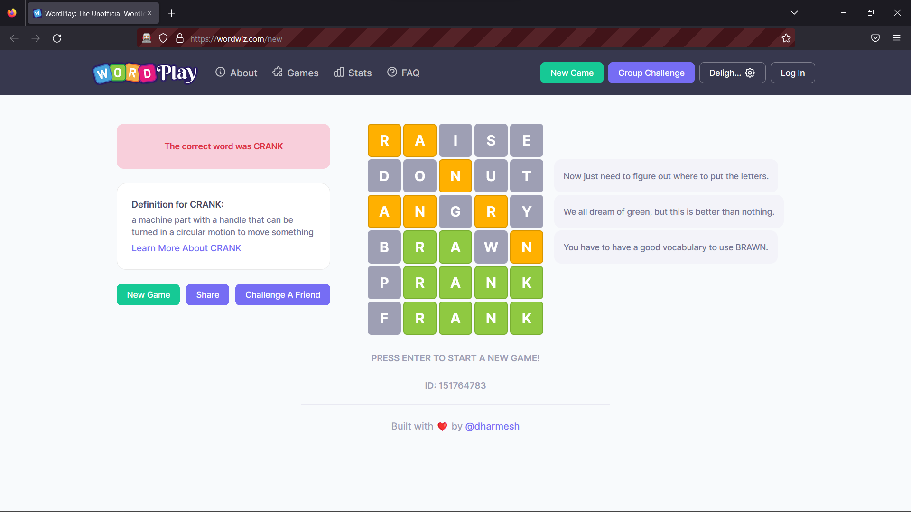
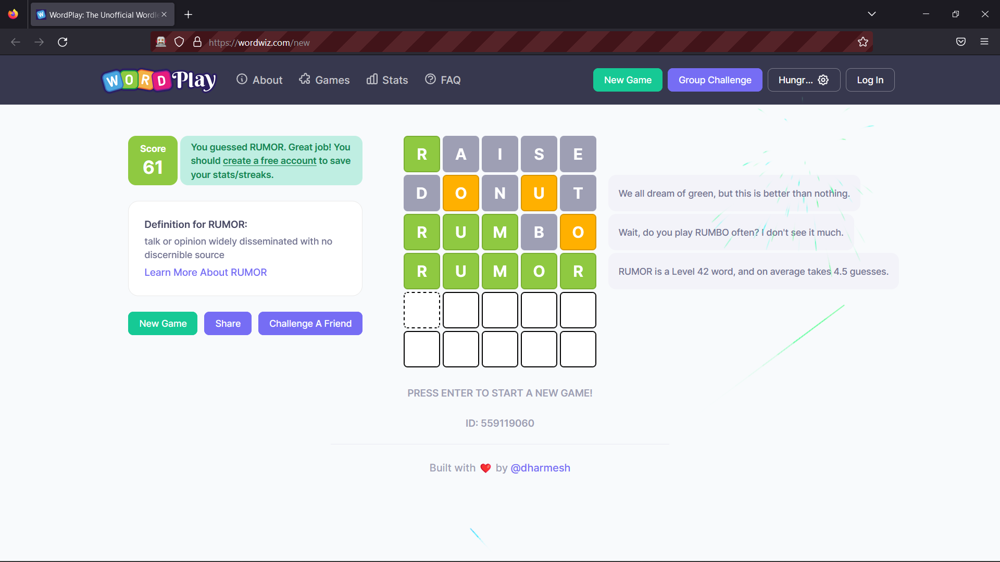
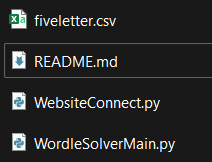
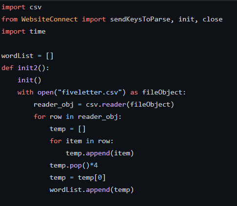
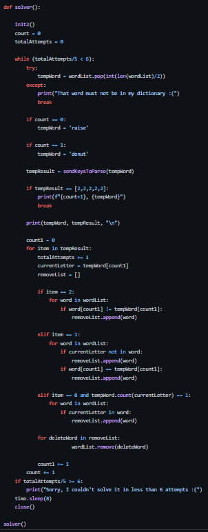
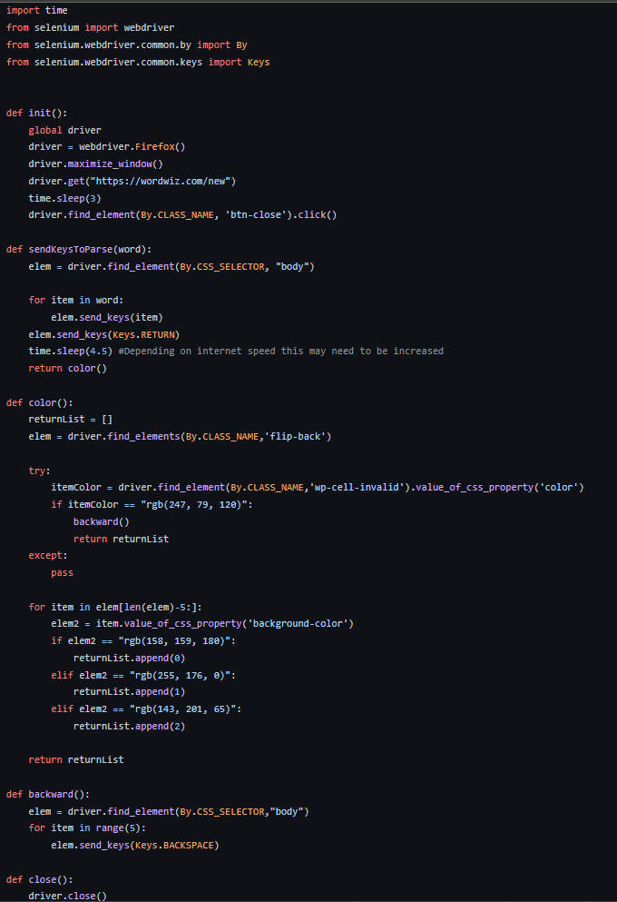

This is a sample project that was made entirely in python. For those that don't know wordle is a game where you have 6 guesses to guess a 5 letter word. Every time you enter a word, if a letter is in
the correct place it it highlight it green. If its in the word but not in the right spot it will highlight it yellow.
The project starts by opening an instance of Firefox and goes to a wordle like site. It then parses the html to know where to click and when. It then attempts a word and sees if the any letters are either green or yellow by passing the css of the website.
It then filters out words that don't match the criteria and then attempts a new word.
I have found it to be around a 93% solving rate. This isn't 100% because of some chance. For example, lets say we have a word "makes" and all the letters are in the correct position except the m. The program then
has to go through every word that has the same last 4 letters and attempt it. Words such as lakes, cakes, bakes. It will typically be able to solve it but sometimes it just runs out of attempts before it can be successful. Below is an example of this problem in action.

Below this we can see what a succesful attempt would look like.

All the source code can be downloaded here on my github page.

The code is divided into two main files. The first one called WordleSolverMain.py is the main file that runs the algorithm that filters out words as they are no longer needed.
The second file called WebsiteConnect.py uses the Firefox Webdriver to control the webpage controls and get the feedback from the website so it can be returned to the main file to parse the data.
Lets look closer at each of these files.
There is also a third file that is a CSV containing a ton of 5 letter words. You can also ignore the README.md file as thats for github.

The main file first starts by initializing a few variables. It then reads all the words in the CSV file and adds each one to a list.
The main program below then removes items based on the data returned from the WebsiteConnect file. For example,
if the WebsiteConnect returns a list such as [2,1,1,0,1] it means that the first letter is in the right spot,
the second, third and fifths letter are in the word but not the right spot and lastly the fourth letter isn't in the word.
The main program than uses this data to remove items from the list that don't belong.
For example, a word "bakes" is [2,1,0,0,0]; it will remove all words that don't have a "b" to start and
words that don't have an "a" in them.

The WebsiteConnect file does all the interaction with the wordle website and also returns that current data that needs to be parsed by the main file.
It starts by initializing a Firefox Driver and opening a webpage at the wordle site. It then closes out the popup that always happens.
After this it tells the main file its ready for a word. Once it receives it, it inputs it into the correct html spot on the website and hits enter.
The program than waits until the data has been received. It then reads the CSS style attribute of the letters that were entered. If for example, the
first letter was green it then adds 2 to a list that will eventually be returned to the main file. It does this for every letter in the word. Eventually once the word is all [2,2,2,2,2]
it then returns a 0 signaling to stop because the word has been found.

Together both of these files work to create a working wordle solver! It took me around 10 hours to complete.